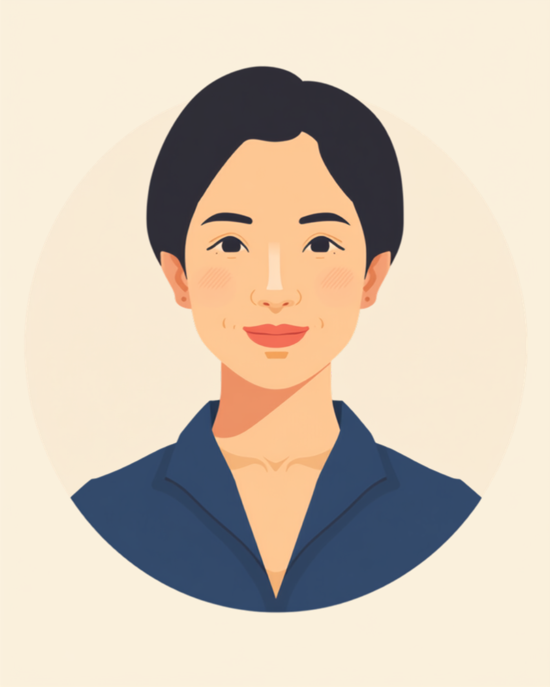

更年期の不調は、外から見てもわかりにくいうえに、本人にとっても「これって年のせい？気のせい？」と判断がつきにくいという厄介さがあります。急なほてりや汗、集中力の低下、理由のわからないイライラ。仕事の場面でそれが出ると、「甘えてるだけじゃないか」「気の持ちようでは」と言われてしまい、余計に消耗してしまうことがあります。この記事では、更年期の不調と仕事の両立で感じやすいしんどさと、職場への伝え方、使える相談先を当事者の声をもとに整理しました（2026年7月時点の情報です）。
PR


「気のせいだよ」と言われる、伝わりにくいしんどさ
更年期の不調は、卵巣機能の低下に伴うホルモンバランスの変化が引き金になっているとされています。気持ちの持ちようや甘えとはまったく違う、体の変化として起きている症状なんです。ミミ
就労支援の現場で関わってきた中でも、40代後半から50代の方の相談で少しずつ増えてきたのが、この更年期の不調にまつわる悩みです。「急に暑くなって汗が止まらない」「前はできてた仕事のミスが増えた」「理由もなくイライラして自己嫌悪になる」。話を聞いていると、症状そのものよりも「これって甘えなのか、それとも本当に体の問題なのか、自分でも判断がつかない」という不安の方が大きいように感じます。
厄介なのは、周囲からも「そんなの誰にでもあることでしょ」「歳のせいじゃない？」と軽く受け取られやすいことです。経済産業省が発表したデータでは、更年期の症状による経済損失額は全国で1.9兆円にのぼるとも言われていて、決して一部の人だけの小さな話ではないとされています（2026年7月時点で確認できる情報です）。それでも、一人ひとりの職場では「気にしすぎ」の一言で片付けられてしまう場面が、まだ多いように思います。
!
更年期に似た症状の裏に、甲状腺の病気やうつ病など別の要因が隠れていることもあるとされています。症状が長引く、日常生活に大きく支障が出ているという場合は自己判断せず、婦人科や心療内科など専門の医療機関に相談してください。
「正直、会議中に急に顔がカーッと熱くなって、汗が止まらなくなる日があるんです。最初は更年期だなんて思わなくて、体調不良かと思って心療内科に行きかけたこともありました。半年くらいしてから婦人科で更年期だってわかって、なんだそういうことかって拍子抜けしたのと同時に、今まで一人で『なんでこんなに調子悪いんだろう』って抱え込んでたのがちょっとバカらしくなりました。今も会議中はこっそり扇子で仰いでますけど、最初の頃は恥ずかしくて仕方なかったです。」
40代後半・女性（事務職）
相談の一コマ

相談者
最近、会議中に急に体が熱くなって汗が止まらなくなることがあって。最初は自分の体調管理ができてないだけなのかなって思ってました。

ミミ
それ、更年期のホルモン変化による症状の一つとして知られているものかもしれません。急に暑くなったり汗が止まらなくなったりするのは、本人の意思や管理の問題ではなく、体の変化として起きていることが多いんですよ。
相談者
そうなんですね…甘えとか気のせいだって思われるのが怖くて、誰にも言えなかったんです。
ミミ
症状の全部を説明する必要はありません。「会議中に急に暑くなることがある」というふうに、困る場面だけ具体的に伝える方法もあります。次の章で、その伝え方を一緒に見ていきましょう。
集中力が続かない、ミスが増える。それは甘えではなく体の変化
更年期の症状は、ほてりや発汗のような身体的なものだけではありません。集中力の低下や物忘れ、理由のわからないイライラや落ち込みといった、心の面に出る症状も少なくないとされています。約100種類ともいわれるほど症状の幅が広く、しかも「身体に出るか、心に出るか」「周りにも気づかれやすいか、本人にしかわからないか」は人によってかなり違うようです。
i
更年期の症状の現れ方や重さには個人差があります。同じ更年期でも、身体症状が中心の人もいれば、気分の落ち込みや不眠が中心の人もいるとされています。気になる症状があれば、一人で抱えずに婦人科や更年期外来に相談してみてください。
特に右下の「心の症状で、かつ気づかれにくいもの」は、本人も「なんでこんなに頭が働かないんだろう」と自分を責めてしまいやすく、周りからは単に「やる気がない」「集中できていない」としか見えないため、二重にしんどいゾーンだと感じています。すでに発達特性など別の困りごとを抱えながら働いてきた方が、更年期に入ってそれまでの工夫が急に効かなくなる、という声もありました。
「もともとADHD気味で、忘れ物とか集中力の続かなさはずっとあったんですけど、更年期に入ってからそれが輪をかけてひどくなった気がします。前は多少無理すれば何とかカバーできてたのに、今はちょっと疲れただけで頭が全然働かなくなる。周りからは『前はもっとしっかりしてたのに』って言われて、自分でも『あれ、私どうしちゃったんだろう』って落ち込む時期が3ヶ月くらい続きました。あとになって、これは甘えでも老化のせいだけでもなくて、ホルモンの影響も重なってるんだって知って、少し楽になった気がします。」
50代・女性（ADHD特性あり・パート事務）
「男にも更年期があるって、恥ずかしながら自分がなるまで知りませんでした。とにかく朝からやる気が出なくて、営業先に行くのも億劫で、イライラが止まらない時期が3ヶ月くらい続いて。周りには『歳のせいでしょ』とか『更年期？男なのに？』って半分笑われて、余計に言えなくなりました。病院で検査してホルモン値が下がってるってわかったときは、ちゃんと理由があったんだって、正直ちょっとホッとしました。」
50代・男性（営業職）
職場にどう伝える、抱え込まないための伝え方
更年期の症状を職場に伝えるのが難しいのは、「言ったら大袈裟に思われるかもしれない」という不安と、「言わないと理解されないまま消耗し続ける」という現実の間で、ちょうどいい落としどころが見つけにくいからだと思います。症状のすべてを説明しようとすると、かえって伝えづらくなってしまうことがあります。
何から伝えればいいかわからないときの整理の仕方
診断名や体の状態を詳しく説明する必要はないとされています。業務に関わる具体的な場面だけに絞って伝える方法が、双方にとって負担が少ないという声を多く聞きます。
- 「会議中に急に暑くなることがあるので、途中で少し席を外すことがあります」
- 「午後、急に集中力が落ちる時間帯があります」
- 「体調が悪そうに見えても、大抵は少し休めば戻ります。深刻に心配しすぎなくて大丈夫です」
- 「調子が悪い日は、在宅勤務やペース配分の相談をさせてください」
症状のすべてを説明しようとしなくて大丈夫です。「この場面で困る」ということだけ絞って伝える。それだけで、周りの受け取り方はずいぶん変わることがあります。ミミ
伝えることは、決して弱さの表明ではありません。信頼できる上司や人事担当者に、業務に関わる範囲でまず共有し、必要な分だけチーム内に広げてもらう、という進め方をとっている方もいるようです。「言ったら迷惑」ではなく、「言わないままの方が、お互いの負担が大きくなりやすい」と捉え直してみると、少し伝えやすくなるかもしれません。
使える選択肢と、一人で抱えないための相談先
治療という選択肢
更年期の症状は、治療によって和らぐ場合があるとされています。ホルモン補充療法（HRT）や漢方薬、カウンセリングなど、症状や体質に合わせた選択肢があります。効果の感じ方には個人差があるため、婦人科や更年期外来で相談しながら、自分に合う方法を探していくことになります（2026年7月時点の情報です）。
相談できる窓口
- 婦人科・更年期外来（症状の相談、治療の選択肢についての相談）
- 男性の場合は男性更年期外来やメンズヘルス外来
- 職場に選任されている産業医（50人以上の事業場に選任義務あり）
- 就労移行支援事業所（すでに障害や特性を抱えながら働いている方が、更年期の変化も含めて働き方を見直したい場合）
更年期の症状の現れ方や、必要な配慮の内容には個人差があります。この記事の内容がそのまま当てはまるとは限らないため、実際の判断は主治医や専門の医療機関、職場の窓口とよく相談しながら進めることをお勧めします（2026年7月時点の情報です）。
気のせいでも、甘えでもありません。体の変化として起きていることを、まず自分自身が認めてあげることが、しんどさと付き合っていく最初の一歩になるかもしれません。
よくある質問
Q. 更年期の不調はいつ頃から仕事に影響しますか？
個人差が大きいですが、一般的に40代半ばから50代前半にかけてホルモンバランスの変化に伴い症状が出やすいとされています。人によっては40代前半や50代後半に出ることもあり、症状の出方や続く期間にも幅があります。気になる症状があれば婦人科や更年期外来に相談することをお勧めします（2026年7月時点の情報です）。
Q. 男性にも更年期の不調はありますか？
はい。男性ホルモンの減少によって、疲れやすさや意欲の低下、イライラなどの症状が現れることがあり、男性更年期障害（LOH症候群）と呼ばれることがあります。女性の更年期障害ほど広く知られていないぶん、周囲の理解を得にくいと感じる方もいるようです。
Q. 更年期の不調を障害者手帳の対象にできますか？
更年期の症状そのものは身体障害者手帳や精神障害者保健福祉手帳の対象にはならないのが一般的です。ただし症状が重く、うつ状態など別の診断名がついた場合は、その診断に基づいて手帳の対象になるケースもあります。判断は主治医にご確認ください（2026年7月時点の情報です）。
Q. 職場に更年期のことを伝えるとき、何から話せばいいですか？
症状すべてを説明する必要はないとされています。「会議中に急に暑くなることがある」「午後に集中力が落ちやすい」など、業務に影響する具体的な場面を絞って伝える方法が、負担が少ないという声があります。まずは信頼できる上司や産業医に相談してみるのも一つの方法です。
Q. 治療によって症状は改善しますか？
ホルモン補充療法（HRT）や漢方薬、カウンセリングなど、症状や体質に合わせた選択肢があるとされています。効果の感じ方には個人差があるため、婦人科や更年期外来で相談しながら、自分に合う方法を探していくことになります（2026年7月時点の情報です）。
この5点を頭に置いておくだけで、少し気持ちが軽くなるかもしれません
PR


一人で抱え込む前に、今の気持ちを話してみませんか
「まだ迷っている」段階でも大丈夫です。mimemimeの無料相談は、今の状況の整理から一緒に始められます。
無料で話してみる
おのざる
mimemime代表。就労支援の現場経験をもとに、障がいのある方の働く不安に寄り添う記事を執筆。